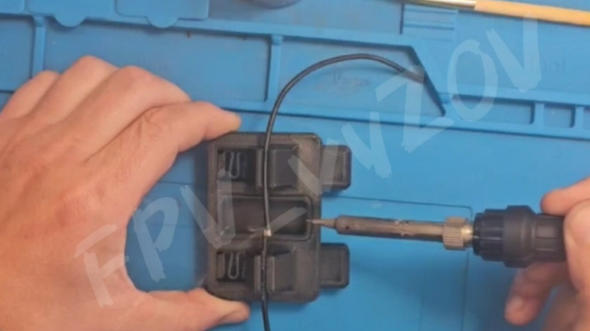
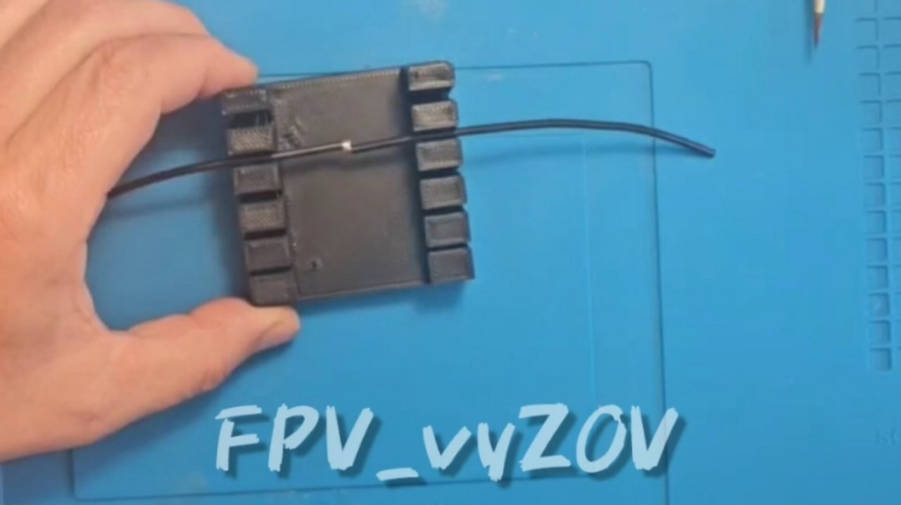
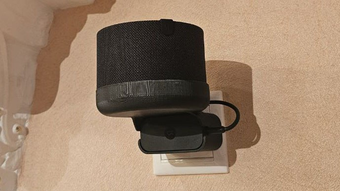
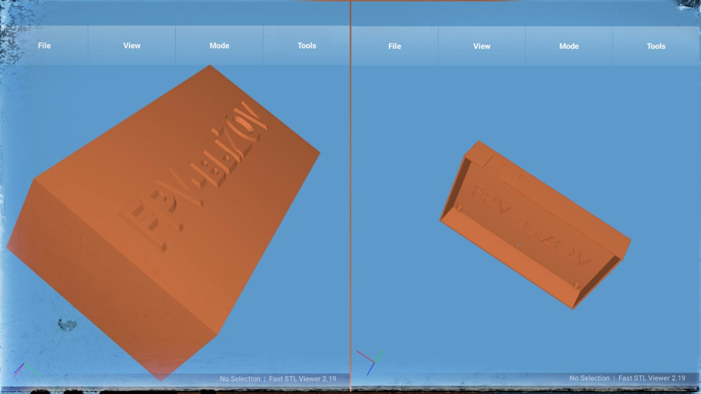

Это вложение из поста t.me/platforma_fpv/252/1041
Органайзер для инструментов на стол
.
Удобный органайзер для отверток, кусачек, крепежей и прочего.
Размер: 180х100х120 мм.
Состоит из:
- основания - в нем ячейки для мелочи (гайки, винты, разъемы и провода),
- 2-х боковых стенок (на них можно закрепить дополнительные держатели, например для катушки припоя),
- верхняя пластина с отверстиями для отверток, пинцетов и кусачек,
- дополнительные держатели.
Всего 13 деталей.
#3Д_МОДЕЛИ_КАТЕГОРИИ_РАЗНОЕ
#Мастерская
Это вложение из поста t.me/platforma_fpv/252/1231

Держатель проводов для пайки, версия 1
Держатель проводов предназначен для фиксации проводов при пайки.
Аналог "Третьей руки", который можно сделать самому.
Позволяет фиксировать не только провода, но и небольшие платы.
Держатель состоит из 6 деталей:
- корпус - 1шт.,
- фиксатор - 2шт.,
- пружина - 2 шт.,
- лоток для припоя - 1 шт.
📎
#3Д_МОДЕЛИ_КАТЕГОРИИ_РАЗНОЕ
#Мастерская
Это вложение из поста t.me/platforma_fpv/252/1642

Держатель проводов для пайки, версия 2
Держатель проводов предназначен для фиксации проводов при пайки.
Аналог "Третьей руки", который можно сделать самому.
В отличим от
, более простой вариант, нельзя закреплять платы.
Но проще и быстрее в печати.
📎
#3Д_МОДЕЛИ_КАТЕГОРИИ_РАЗНОЕ
#Мастерская
Это вложение из поста t.me/platforma_fpv/252/1644

Подставка для Яндекс-станции мини 2, v1
Держатель для Яндекс-станции Мини 2, устанавливается на блок питания.
Очень удобно, не занимает лишнего пространства, провода прячутся в корпус держателя.
📎
#3Д_МОДЕЛИ_КАТЕГОРИИ_РАЗНОЕ
Это вложение из поста t.me/platforma_fpv/252/1568

Fast STL Viewer
ℹ️Приложение для мобильного - просматривать STL-файлы.
📎
(версия 2.19)
#программное_обеспечение
#для_android
Это вложение из поста t.me/platforma_fpv/16/1017
ВСЕ
#3Д_МОДЕЛИ_КАТЕГОРИИ_РАЗНОЕ
Не умею отображать вложенные ссылки на топики
Не умею отображать вложенные ссылки на топики
(пульты, РЭБ, РЭР, АКБ и пр.)
➤ Медицина
➤ Мастерская
➤ Отдых
Полезные ПО для 3Д специалиста
Невозможно отобразить содержимое https://t.me/platforma_fpv/1346/1450
Веб-страница создана автоматически на основе поста пользователя ПЛАТФОРМА_FPV